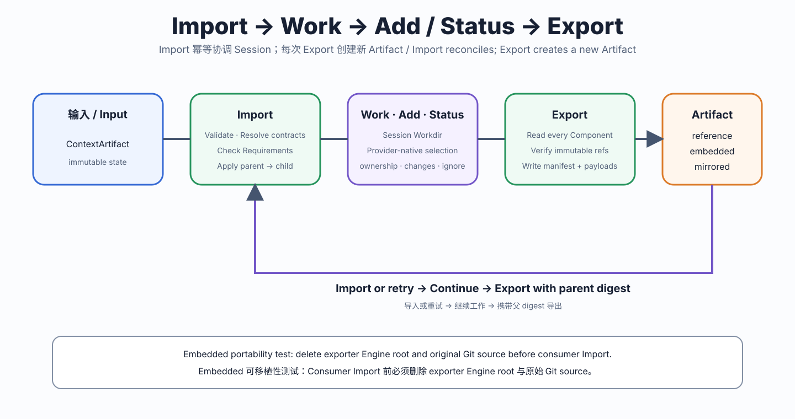
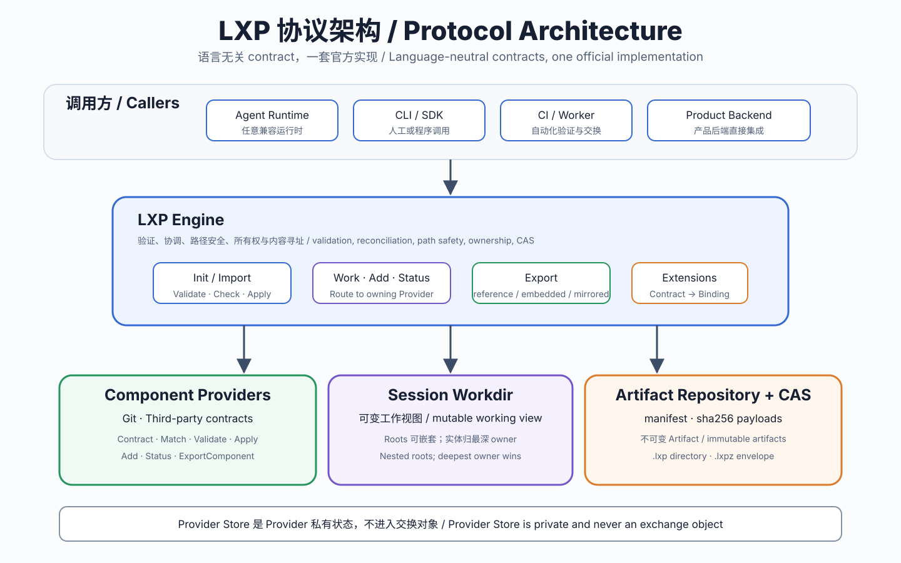

loop.exchange/v1alpha1 · PUBLIC ALPHA
像 Git 一样交换 Agent 上下文
LXP 导入不可变状态，在工作区中修改与选择变更，再导出有父状态的新 Artifact。它是上下文协议，不是部署模板或命令工作流。
Init / Import → Work → Add → Status → Export → Import …

一条边界
LXP 管 ownership
Component roots 可形成 lexical tree；实体归最深 root，Core 负责路径、安全、Requirements、CAS 与 Artifact。
Provider 管内容
父 Provider 排除 child subtree，物理不兼容时失败；协议不定义 mount capability 矩阵。
Artifact 管历史
每次 Export 创建新 immutable identity；provenance.parent 连接线性历史。
Production MVP
官方 CLI 只装配 git@v1，完整支持 reference、embedded 与 mirrored .lxpz。lxp add 会把已初始化 submodule 注册为独立嵌套 Component，也会按 gitlink 锁定 revision 初始化缺失 submodule；Import 父到子恢复，Export 子到父验证 gitlink/revision。Embedded staged patch 的 Export/Import 上限同为 256 MiB，超限 Export 在发布前失败。使用 lxp export --distribution 选择形式（默认 embedded），Import 自动读取 Artifact 声明。Import 在物化或 activation 前验证 Artifact、展示内部 Provider Plan 并检查 Requirements。Config 与 payload role 由 Provider contract 定义；Artifact 不携带 Provider 可执行代码。

五分钟理解
运行 go install github.com/loop-exchange-protocol/go-sdk/cmd/lxp@latest 安装官方 CLI，再运行 LXP_BIN="$(command -v lxp)" examples/quickstart/run.sh，即可看到真实的 Git discovery、Add、Export、删除来源后的 Import，以及带父 digest 的第二代 Artifact。CLI 默认 deadline 为 15 分钟，可用 LXP_TIMEOUT 覆盖；Git credential prompt 被禁用。Session 使用解析 symlink prefix 后的物理路径，macOS 的 /var 与 /private/var 不会形成两个 Workdir。完整交换 YAML 位于 示例 manifest。
可信输入限制：v1alpha1 不承诺兼容性，只面向可信 Artifact。验证与执行策略不是恶意输入的完整安全边界。
ENGLISH
Exchange agent context like Git
LXP imports immutable state, lets a worktree change and select content, then exports a new Artifact linked to its parent. It is a context protocol, not a deployment template or command workflow.
Init / Import → Work → Add → Status → Export → Import …
One boundary
LXP tracks ownership; Providers track content. Component roots may form a lexical tree and each entity belongs to its deepest root. Parent Providers exclude child subtrees and fail on physical incompatibility; the protocol defines no mount-capability matrix.
The Production MVP composes git@v1 only and fully supports reference, embedded, and mirrored .lxpz Artifacts. lxp add registers initialized submodules as independent nested Components and initializes missing ones at their gitlink-locked revisions. Import restores parent to child and Export validates gitlink/revision child to parent. Export and Import share a 256 MiB limit for the embedded staged patch, and an oversized Export fails before publication. lxp export --distribution selects the form (default: embedded), and Import reads the Artifact declaration automatically. Import validates and presents its internal Provider Plan before materialization or activation. Artifacts carry no Provider executable code.
Install the official CLI with go install github.com/loop-exchange-protocol/go-sdk/cmd/lxp@latest, then run LXP_BIN="$(command -v lxp)" examples/quickstart/run.sh for a black-box two-generation lifecycle. The CLI defaults to a 15-minute deadline, supports LXP_TIMEOUT, and disables Git credential prompts. Physical path normalization keeps macOS /var and /private/var in one Workdir. Inspect the complete Artifact YAML example.
Trusted-input limitation: v1alpha1 has no compatibility promise and is limited to trusted Artifacts. Validation and execution policy are not a complete hostile-input boundary.